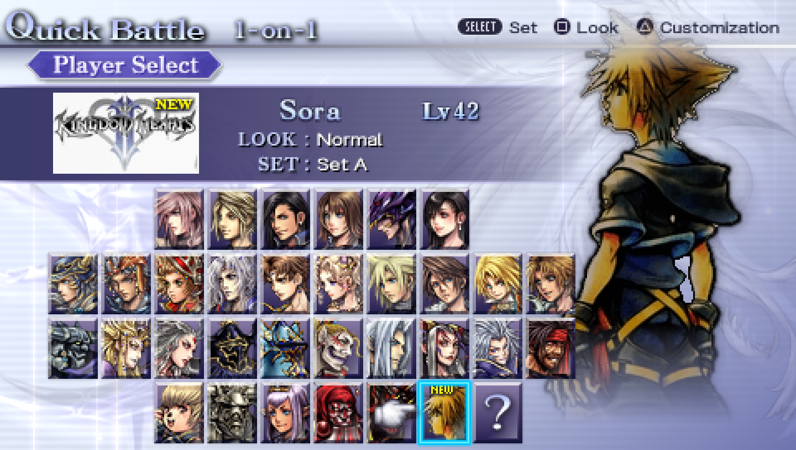
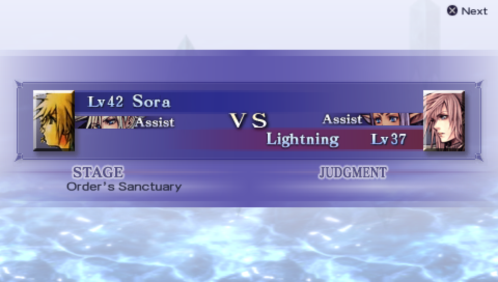
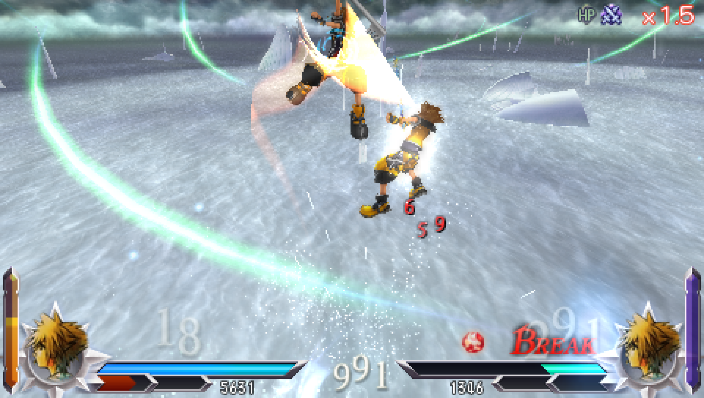
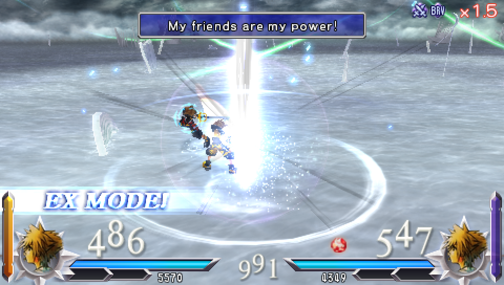
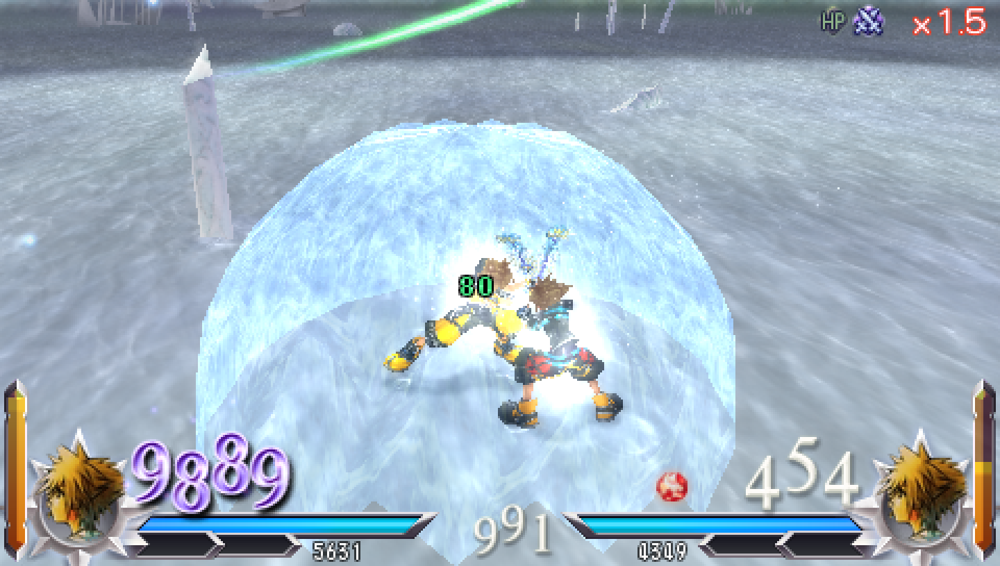
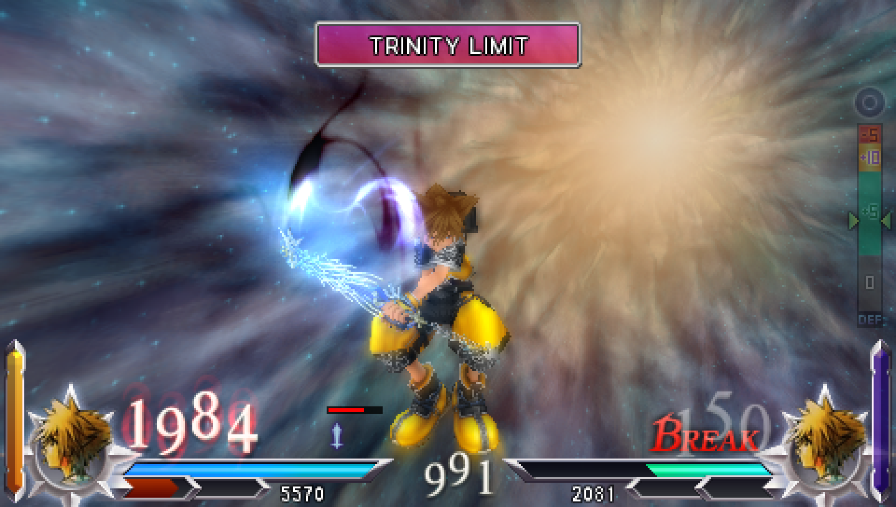
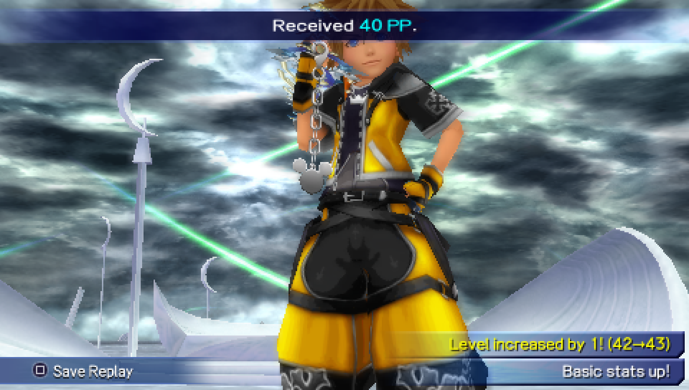

Fan-made patch · PSP · version 1.1
A new fighter with his own Keyblade combos, EX Mode, Reflect barrier and Trinity Limit EX Burst, built from his Kingdom Hearts II moves. Patch your own US copy in one click.
Windows · macOS · Linux · free and open source (GPL-3.0). You bring your own game.

Trailer
Ground and air chains, a finisher, EX Mode with Reflect, and the EX Burst. Recorded in PPSSPP from the patched game.
Screenshots
Native 480 × 272, scaled up without smoothing.






What's in it
Sora takes a new spot on the roster (#33), next to the original 31 fighters. Nobody is replaced.
Ground and air Keyblade chains, finishers and magic like Firaga and Thundaga, timed from his KH2 animations.
His own EX look and a Reflect barrier that blocks attacks and fills your EX gauge back up.
A full EX Burst with its own banner and finisher.
Sora's KH2 model at the right size, the Kingdom Key in his hand, his voice and Keyblade sounds.
Quick Battle, assist, Labyrinth, Original Quest, Records and the Museum. Six new items in the PP Catalog.
Your progress carries over. Sora's record uses the space of Friend Card 25.
Install
The app only reads your file and makes a new one next to it. Your original stays untouched.
Download it for your computer from the release page.
Choose your own US Dissidia 012 ISO. The app checks that it is the right, complete, unmodified copy.
Open the new file in PPSSPP, or copy it to ux0:pspemu/ISO/ on a PS Vita with Adrenaline. Back up your save first.
The file you need
Where it runs
On PC. Every mode was played through in testing.
Battles, EX Mode, assists, Data Install and old saves all work. Turn off Adrenaline's game plugins first.
Needs custom firmware. Should work like the Vita, but nobody has tried it on a real PSP yet.
FAQ
From your own copy. This page never links to game files, and the patch contains no Dissidia files. Make the ISO from your own UMD.
No. The patch is made against the game's program file unlocked, which only this app does, from your copy, while it works. The app is small and does everything offline.
The app isn't code-signed, so the system warns once. Windows: "More info" → "Run anyway". macOS: System Settings → Privacy & Security → "Open Anyway" (older macOS: right-click the app → Open).
Turn off Adrenaline's game plugins: hold R while Adrenaline starts → Recovery → Plugins → set every "game" line to Disabled. Old plugin packs stop the game from starting, with or without the patch.
Back it up first. Sora's progress uses the space of Friend Card 25, so you keep 24 Friend Cards (lock the ones you want to keep). Going back to the original game with that save isn't supported, so restore your backup instead.
A save that was first created in PPSSPP may not load on real hardware, even with the original game. Saves made on a real PSP or Vita work fine.
Only if both players use this same Sora version. Friend Cards and ghosts from the unmodded game aren't supported.
Yes. The patch app is free software under the GNU GPL v3. Source on GitHub.